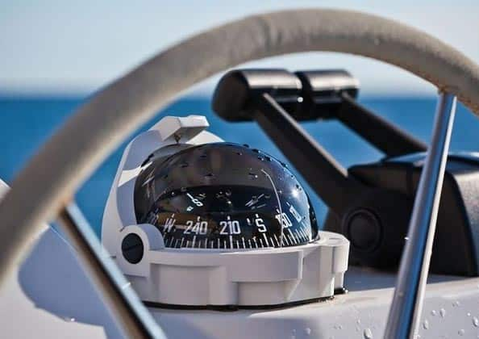

Liquid compasses were initially used with dry compasses until it became the dominant option beginning in the 19th century. Initially, dry compasses were used more because of liquid compasses often leaking and having worn pivots that were difficult to repair. However, due to significant improvements of the liquid marine compass by American inventor and physicist Edward Samuel Richie, it was purchased and used by English Royal Navy and the United States Navy, and was a key instrument that aided in the World Wars. After its active use in the waters, it even started being used in aircrafts.
Liquid marine compasses are usually protected in a binnacle and gimbal-mounted, and have a liquid-filled dome with a magnetized needle and incremental readings of directions. The advantages of having fluid was that it effectively damped shock and vibration and eliminated excessive swing of the card, which were weaknesses of the dry compass. The issues with the leaks and difficulty of repairing pivots was overcome by improvements in 1862, where a system of bellows was added to expand and contract with the liquid, preventing most leaks, and the card was given a float that took most of the weight off the pivot.
Liquid marine compasses are usually protected in a binnacle and gimbal-mounted, and have a liquid-filled dome with a magnetized needle and incremental readings of directions. The advantages of having fluid was that it effectively damped shock and vibration and eliminated excessive swing of the card, which were weaknesses of the dry compass. The issues with the leaks and difficulty of repairing pivots was overcome by improvements in 1862, where a system of bellows was added to expand and contract with the liquid, preventing most leaks, and the card was given a float that took most of the weight off the pivot.